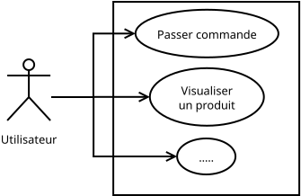
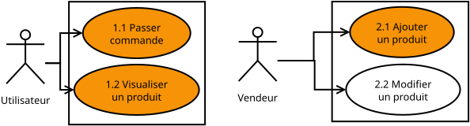
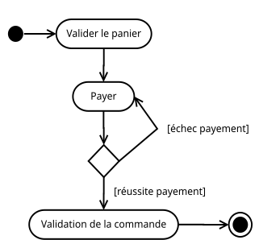

Différentes étapes d'un projet :
- Analyse : ce qu'on veut faire.
- Conception : comment faire.
- Implémentation : faire.
- Intégration et Déploiement :
- intégrer le nouveau code au projet.
- pousser en production.
- Maintenance : après la mise en production.
- correction de bugs.
- ajout de fonctionalités.
Autres étapes :
- planification (cf cycles de développement logiciel).
- tests (cf R4-01 Automatisations et Tests en Programmation).
Analyse :
- cadrer le projet : éviter de partir dans tous les sens, ou dans la mauvaise direction.
- échanger avec le client, ses besoins, contraintes (⚠ envies ≠ besoins).
- contractualiser via un cahier des charges.
- YAGNI (You ain't gonna need it) : ne pas anticiper d'hypothétiques besoins futurs.
- coût (temps, ressources), complexifie le code et la conception.
- attendre que le besoin se matérialise.
- MVP (Minimum Viable Product) : ensemble minimal des fonctionnalités nécessaires.
- prioriser les besoins.
- Avoir un produit testable et exploitable le plus rapidement possible.
- Loi de Pareto : ~20% des fonctionnalités répondent à ~80% des usages.
Maquettes, prototypes, ou preuves de concepts (PoC - Proof of Concept) :
- Simuler grossièrement le comportement ou l'interface graphique (e.g. slides).
- pour démontrer la faisabilité, et échanger avec le client avec des éléments plus tangibles.
UML est un langage de modélisation graphique.
- 14 types de diagrammes.
- pour réfléchir, communiquer, documenter, etc.
- death by UML fever : ne pas en abuser, tous les graphes ne sont pas toujours nécessaires.
⚠ À utiliser en fonction des ressources et contraintes :
- exercice de TP produit en 2 minutes.
- code critique d'une centrale nucléaire.
Le cahier des charges décrit les différentes fonctionnalités du projet, par le biais de cas d'utilisations.
"Passer commande : l'utilisateur rempli son panier, puis le valide avant de procéder au payement. Si l'utilisateur n'est pas connecté, une authentification lui sera demandée lors de la validation du panier."
Cas d'utilisations (use case) décrit, en langage non technique, un ensemble d'actions pour une finalité.
- e.g. interactions du système avec différents acteurs (≈ rôle assumé par une entité externe).
⚠ Une action utilisateur, e.g. ajouter un produit au panier n'est pas une finalité en soit.
Diagramme de cas d'utilisation : représente graphiquement et synthétiquement la liste des cas d'utilisations.
- Réfléchir différents usages et acteurs du système.

⚠ Peu utile si vous n'avez que peu de cas d'utilisations et d'acteurs.
Astuce 1 : utiliser des codes couleur, e.g. pour indiquer le niveau de priorisation (e.g. pour le MVP).
Astuce 2 : indexer les cas d'utilisation e.g. "1.2 Visualiser un produit" pour le retrouver dans le CdC.
Astuce 3 : découper en sous diagrammes (par acteurs, ou groupes de fonctionnalités) pour conserver des diagrammes lisibles et visuels, e.g. :

Diagramme d'activité : décrit visuellement un cas d'utilisation, chaque noeud correspond à une action :
